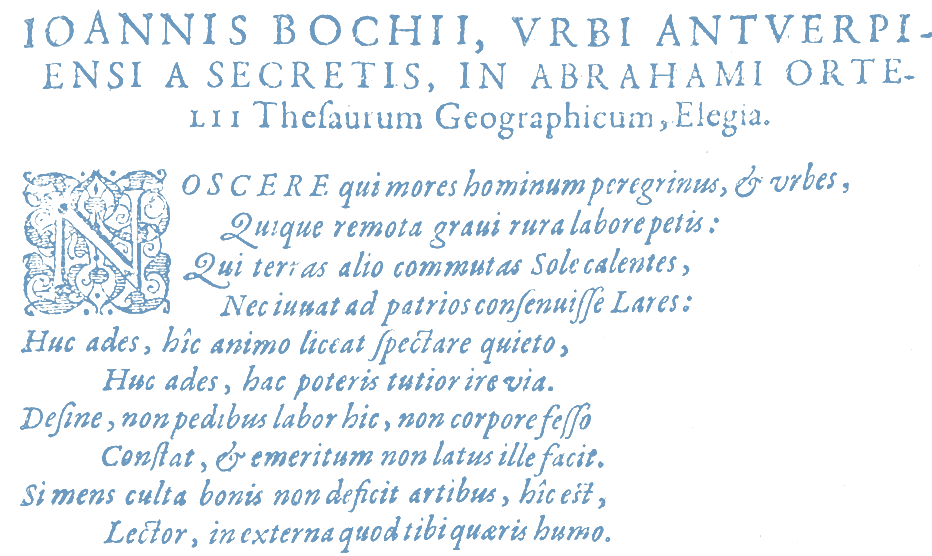
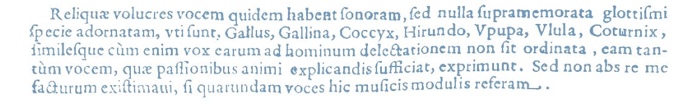

qwe
scvvl
aLAl
BIBLIOTECAk
yioucvvlpi
yui
La Palafoxiana parece pequeña comparada con el universo de conocimientos que guarda. Hay que considerar que una biblioteca es mucho más que el edificio y los libros que ahí se encuentran. Para que funcione adecuadamente, es necesaria una gran organización. La Biblioteca Palafoxiana estuvo bien reglamentada desde su fundación en el siglo xvii. En el siglo xviii se escribió un reglamento, una de cuyas cláusulas dice:
XVIII
Será de mucha importancia y ordenamos tengan también este cuidado los bibliotecarios, el recoger en la librería los papeles, sermones,
y otras piezas, que suelen imprimirse en el Reino; pues ya se ve que en pasando algún tiempo nada se halla, y todas estas cosas hacen
el caso en un país del que aún no se conoce su historia completa, a la que algunas de estas obras puedan conducir no poco. Se pondrán
por lo mismo en sus alacenas, o cajones, y cuidarán los bibliotecarios igualmente de que se encuadernen luego de que formen un competente
cuerpo, y de conservar en la propia librería cualesquiera otros documentos manuscritos, o en caracteres de los indios, o de otro modo sea
el que fuere.
Fabián y Fuero, Francisco. Ordenanzas para el uso de la Biblioteca Palafoxiana, en: Artes de México, México: revista Artes de México, 2003.
El Obispo Juan de Palafox y Mendoza estableció en sus primeros días que el cuidado de los libros lo llevaría el bibliotecario designado o el rector de los colegios tridentinos. Más tarde, el obispo Fabián y Fuero, preocupado por la permanencia y preservación de la biblioteca, escribió un reglamento rígido. En él se establecían normas de aseo, horarios, consultas, etcétera.
Aunque era pública y abierta, para ese entonces y aún hoy en día, el préstamo externo es impensable. La pena, para quien extrajera algún libro, era excomunión inmediata, dictada por el Papa.
Aquellas previsiones finalmente resultaron atinadas, pues la biblioteca ha permanecido casi intacta hasta nuestros días, después de tantos años, aún se consulta y se puede visitar.
Hay que resaltar que desde su comienzo, la biblioteca continua recibiendo donaciones y acumulando volúmenes. En 1772, además de otros acervos particulares, recibió los libros de las bibliotecas de los colegios jesuitas de Puebla, después de que estos fueron expulsados de México en 1767 por orden del rey carlos iii.
Casi un siglo más tarde, la biblioteca formó parte de la nacionalización de bienes eclesiásticos junto con los seminarios tridentinos. En 1861 pasó a manos del gobierno, producto de las Leyes de Reforma.
En 1862, después de las reformas hechas por el presidente Juárez, la Palafoxiana abrió sus puertas como Biblioteca Pública del Estado, conservando toda su estructura.
La Biblioteca ha sobrevivido a los embates de la naturaleza y de los hombres. A lo largo de los siglos ha resistido diversos sismos y movimientos militares como la Intervención Francesa en 1862 y la Revolución Mexicana en 1910. Es por eso que su permanencia al día de hoy se considera sin duda un logro póstumo de Palafox.
En 1974 se inauguró la Casa de la Cultura de la Ciudad de Puebla, con lo que se inició un proceso de limpieza y restauración de la Biblioteca. En 1981, el recinto cerró sus puertas a la consulta pública tras ser declarado “Monumento Histórico Nacional”. En 2005, tras un largo trabajo de restauración, rescate y catalogación, la Biblioteca Palafoxiana fue inscrita en el programa “Memoria del Mundo” de la UNESCO, como la primera biblioteca pública del continente americano.
Una de las características esenciales de una biblioteca es conservar la información en ella resguardada para su difusión. En el caso del libro antiguo, no sólo es importante la información, sino que el propio objeto se vuelva un registro de la evolución de las técnicas históricas editoriales y de su proceso de resguardo.
Los principales factores que atentan contra la conservación del patrimonio de una biblioteca son el medio ambiente, el desgaste físico, la falta de prevención y protección ante siniestros además de el riesgo de robo, así como el vandalismo.
Actualmente, para evitar la destrucción y pérdida de estos valiosos libros, la biblioteca tiene cristales con protección contra rayos ultravioleta, y cada semana es recorrida por especialistas para realizar una limpieza y un diagnóstico del acervo. También existen periodos regulares de desinfección, ya que los materiales del acervo son en su mayoría de origen orgánico, y debido a esto sufren envejecimiento a causa de factores medioambientales.
qwe
scvvl
aTHEl
LIBRARYk
ioucvvl
The Palafoxiana appears small compared to the universe of knowledge it holds. We must consider that a library is much more than the building and the books found there. In order for it to work properly great organization is necessary. The Palafoxiana Library has been well-regulated since its foundation in the seventeenth century. In the eighteenth century regulations were written, of which one of the clauses reads:
xviii
It will be very important and we order that the librarians take care of picking up the papers, sermons, and other items, which are often
printed in the Kingdom; because it has been observed that after a while nothing can be found and all these things occur in a country that
does not yet known its full story, and learning the full story is something which some of these works can lead to. Therefore everything
will be put away in the cupboards, or drawers, and the librarians will make sure that when enough papers form a competent body, that they
be bound and that any other handwritten documents, or documents written in the symbols of the Indians, be stored as may be the case.
Fabian y Fuero, Francisco. Ordinances for the use of the Biblioteca Palafoxiana, in: Artes de Mexico, Artes de Mexico magazine, 2003.
In his first few days in office Bishop Juan de Palafox y Mendoza established that the care of the books would be the responsibility of the designated librarian or the rector of the colleges of Trent. Later, Bishop Fabian y Fuero, concerned about the permanence and preservation of the library, wrote a set of rigid regulations. These regulations established timetables for housekeeping, queries, and so on.
Although it was public and open, at that time, and even today, external borrowing is unthinkable. The penalty, for anyone who extracted a book, was immediate excommunication, dictated by the Pope.
In the end, those standards were wise, because the library has remained almost intact until our days, after so many years, consultation is still permitted and it can also be visited.
It should be noted that since its inception, the library has continued to receive donations and has accumulated more volumes. In 1772, in addition to other special collections, it received the books from the libraries of the Jesuit colleges in Puebla, after they were expelled from Mexico in 1767 by order of King charles the iii.
Almost a century later, the library was part of the nationalization of church property along with the Tridentine seminars. In 1861 it passed into the hands of the government as a product of Reform legislation.
In 1862, after the reforms made by President Juárez, the Palafoxiana opened its doors as a Public State Library, preserving its entire structure.
The Library has survived the ravages of nature and men. Over the centuries it has withstood earthquakes and various military movements such as the French intervention in 1862 and the Mexican Revolution in 1910. This is why its permanence to today is considered without a doubt a posthumous achievement of Palafox´s.
In 1974 the Casa de la Cultura or House of Culture was inaugurated in the city of Puebla, which generated a cleaning and restoration process of the Library. In 1981, the library closed its doors to public consultation after being declared "National Historical Heritage". In 2005, after a long period of restoration, rescue and cataloging the Biblioteca Palafoxiana was registered in UNESCO's "Memory of the World" program as the first public library on the American continent.
One of the essential characteristics of a library is to preserve the information that is safeguarded within it for its dissemination. In the case of ancient books, it is not only important information, but the object itself becomes a record of the evolution of historical editorial techniques and their safeguarding process.
The main factors that put the preservation of the heritage of a library at risk are the environment, physical use, a lack of prevention and protection against disasters in addition to security against theft, as well as vandalism.
Currently, to prevent the destruction and loss of these valuable books, the library is fitted with glass with UV protection, and each week it is inspected by specialists for cleaning and a diagnosis of the heritage. There are also regular disinfection periods for the materials, as the archive materials are mostly of organic origin, and because of this they are subject to aging due to environmental factors.
||
||
#cv)
/zELc(
ORIGENk
uo|po
p

Sobre el dintel de la puerta de entrada se encuentra una estatua de Don Juan de Palafox y Mendoza, sacerdote de procedencia española y noveno obispo de Puebla, quien ocupó múltiples cargos en la Nueva España.
Juan de Palafox y Mendoza nació en Fitero, Navarra, el 24 de junio de 1600. Hijo del marqués de Ariza Don Jaime de Palafox y Rebolledo, y de doña Ana Casanate. Luego del rechazo de su madre, fue criado por Pedro Navarro y sólo hasta los nueve años fue reconocido por su padre aristócrata. Su madre arrepentida proveyó para su sustento, y posteriormente ingresó a la orden de las Carmelitas Descalzas, donde permaneció hasta su muerte.
Palafox vivió su juventud en la corte, rodeado de libros y conocimiento. Estudió en las Universidades de Huesca, Alcalá y Salamanca. En 1629 se ordenó como presbítero. Viajó por varios países de Europa fungiendo como limosnero y capellán de la hermana del rey felipe iv. La confianza de la Corona en él hizo que llegara a la Nueva España a los 40 años para fungir diversos cargos. Fue Obispo de Puebla entre 1640 y 1649, y virrey de la Nueva España en 1642. Le interesó la educación, defendió la justicia y el buen gobierno. Creyó en los libros como una herramienta esencial para los sacerdotes y también para el desarrollo del pueblo. Se interesó particularmente en la política, por lo que colaboró en la redacción de las Leyes de Indias. Palafox integró a la formación de los seminaristas el aprendizaje de las lenguas autóctonas y participó activamente en la educación de los mismos.
En Puebla hizo levantar templos, ermitas, retablos, colegios, hospitales, curatos y casas episcopales, además de la catedral que él mismo consagró. Sin embargo, durante su vida, según el propio Palafox, fue acusado de supuestos vicios, pagos de diezmos y de buscar reducir la influencia de ciertas órdenes religiosas como los jesuitas.
El Obispo quizo morir en Puebla, no obstante, falleció el 1 de octubre de 1659 en la ciudad de Osma, España. En la catedral de Puebla se encuentra su cenotafio, monumento funerario erigido en su memoria. Hoy en día, se guardan allí sus restos mortales, traídos a Puebla el 22 de junio de 2011, año de su beatificación.

Juan de Palafox y Mendoza (1600 - 1659)
De los beneficios particulares que Dios hizo a este pecador en su infancia, antes de nacer y luego después de haber nacido.
Palafox y Mendoza, Juan de. Vida Interior del Ilustrissimo, excelentissimo, y venerable señor Don Juan de Palafox y Mendoza.
Sevilla: sacala a la luz Don Miguel de Vergara, 1691.
Con una pasión afín a la de Palafox, en el año 1771, el entonces obispo de Puebla, Francisco Fabián y Fuero, también donó su biblioteca personal para incrementar el acervo de la Palafoxiana. Asimismo, don Francisco logró que un gran número de volúmenes de las librerías de los jesuitas formaran parte de la colección.
Don Francisco Fabián y Fuero nació en Terzaga, España, en 1719. Estudió filosofía con los Carmelitas de Calatayud y teología en Alcalá de Henares. Obtuvo la licenciatura en 1743 y el doctorado en 1744. En el año 1765, el rey carlos iii, le otorgó el título de Obispo de la ciudad de Puebla de los Ángeles, cargo que ocupó hasta 1773. En este periodo, Fabián y Fuero mandó edificar el espacio de la Biblioteca Palafoxiana para lograr una verdadera obra de arte. Durante su mandato se construyeron los dos primeros niveles de estantería en cedro, con una capacidad para 20,000 volúmenes, resultando un trabajo de ebanistería ejemplar.
Francisco Fabián y Fuero fue un individuo tenaz, un excelente orador, un reformador y un apasionado defensor de la Monarquía, del derecho eclesiástico y episcopal; falleció en Torrehermosa, España, en 1801, a los 81 años de edad.
||
||
#cv)
/zTHEc(
ORIGINk
uo|po
p
On the lintel of the main door there is a statue of Don Juan de Palafox y Mendoza, a Spanish priest and the ninth bishop of Puebla, who held multiple positions in New Spain.
Juan de Palafox y Mendoza was born in Fitero, Navarre, on 24 June 1600. He was the son of the Marquis of Ariza Don Jaime de Palafox y Rebolledo, and Dona Ana Casanate. After being rejected by his mother, he was raised by Pedro Navarro and it was not until he was nine years old that he was recognized by his aristocratic father. His mother repented and provided for his livelihood. She was later admitted to the order of the Barefoot Carmelites, where she remained until her death.
Palafox lived his youth at court, surrounded by books and knowledge. He studied at the Universities of Huesca, Alcala and Salamanca. In 1629 he was ordained a priest. He traveled to several countries in Europe serving as chaplain of the sister of King felipe iv. The confidence the crown had in him is what sent him to New Spain at the age of 40 to serve in various positions. He was Bishop of Puebla between 1640 and 1649, and Viceroy of New Spain in 1642. He was interested in education, defended justice and good government. He believed in books as an essential tool for priests and also for the development of the people. He was particularly interested in politics, and collaborated in the drafting of the Laws of the Indies. In the education of seminarians he included the learning of indigenous languages and actively participated in the education of indigenous people.
In Puebla he had temples, shrines, altars, schools, hospitals, and Episcopal residences built, in addition to the cathedral that he personally consecrated. However, during his life, according to Palafox himself, he was accused of alleged flaws, payments of tithes and of seeking to reduce the influence of certain religious orders such as the Jesuits.
The Bishop wanted to die in Puebla, however, he died on October 1, 1659 in the city of Osma, Spain. His cenotaph, a funerary monument erected in his memory, is located in the Cathedral of Puebla. Today, his mortal remains lie in the cenotaph, after being brought to Puebla on June 22, 2011, the year of his beatification.
Juan de Palafox y Mendoza (1600 - 1659)
Of the special benefits that God gave to this sinner in his childhood,
before birth and then after he was born.
Palafox y Mendoza, Juan de. The spiritual life of his Excellency, the Illustrious and Venerable Don Juan de Palafox y Mendoza. Seville:
Don Miguel de Vergara, 1691.
With a passion akin to that of Palafox, in 1771, the Bishop of Puebla, Francisco Fabian y Fuero, also donated his personal library to increase the archives of the Palafoxiana. Additionally, Don Francisco played an important part in having a large number of volumes in the Jesuit libraries become part of the collection.
Don Francisco Fabian y Fuero was born in Terzaga, Spain, in 1719. He studied philosophy with the Carmelites of Calatayud and theology in Alcalá de Henares. He obtained a bachelor's degree in 1743 and a doctorate in 1744. In the year 1765, King carlos iii, granted him the title of Bishop of the city of Puebla de Los Angeles, a position he held until 1773. During this period, Fabian y Fuero ordered that the Library be decorated to achieve its transformation into a true work of art. During his tenure the first two levels of cedar bookshelves were built, with a capacity for 20,000 volumes, proving to be an exemplary work of cabinetmaking.
Francisco Fabian y Fuero was a tenacious individual, an excellent speaker, a reformer and a passionate advocate of the monarchy, ecclesiastical and Episcopal law; he died in Torrehermosa, Spain, in 1801, at the age of 81.
w|e
vv|vl
xELxjq
aACERVOl
dxc

La Biblia Regia o Biblia Poliglota de Amberes es una edición de ocho tomos que contiene el texto de las Sagradas Escrituras en hebreo, arameo, griego y latín. Fue editada por Benito Arias Montano e impresa en Amberes entre 1569 y 1573. La Biblioteca Palafoxiana alberga la colección completa de este importante texto.
Como en todas las bibliotecas de carácter seminarista, además de los volúmenes de Teología escolástica y moral, Historia sagrada, Derecho canónico, Liturgia, Padres y doctores de la iglesia, las Biblias son la parte central y de mayor importancia en el acervo.
También aquí se conservan libros que han cambiado el curso de la humanidad por los conocimientos que guardan, por ejemplo: diccionarios, libros clásicos de ciencia, de geografía, de literatura antigua, gramáticas e incluso títulos considerados profanos. Asimismo, aquí se pueden encontrar incunables, nombre que se les da a los libros impresos desde el nacimiento de la imprenta hasta el año 1500.

Los hebreos huyen de Egipto en busca de la Tierra Prometida.
Biblia Sacra hebraice, chaldaice, graece &latine, tomo i . Antverpiae: Christoph.
Plantinus excud., 1569-1573.
Un libro guarda más información que la que está impresa en él. Para descubrirla es necesario tomarlo entre las manos, sentirlo, observarlo, conocer, por ejemplo, la textura y la forma de encuadernación. Los libros antiguos se distinguen por estar hechos a mano. Cada pliego era cosido en su doblez central con hilos en el lomo, y estos hilos eran sujetos a las cubiertas.
Los libros normalmente se forraban con piel y cartón o papel vitela, que es un tipo de pergamino realizado a partir de una fina capa de piel tratada y desengrasada que fue usada a partir de la Edad Media.
Los primeros libros se escribieron a mano. Cuando apareció la imprenta, se utilizaron tipos móviles y la tipografía dependía de cada productor y su casa editorial. Destacan en los libros antiguos el uso de letras capitulares, con una proporción visiblemente mayor que las demás, y que son las primeras de cada capítulo o párrafo. Algunas están ornamentadas y poseen imágenes dentro de ellas para facilitar la localización de cierto pasaje. Entre la invención de la imprenta y el año 1500 se comenzaron a imprimir los libros llamados incunables.
De acuerdo con la tradición occidental, la estructura de los libros antiguos está conformada por la portada, en donde se encuentra la información más completa de la obra: autor, título, grabadores, edición, impresor; y el texto, la parte fundamental del libro, que puede estar dividido en tomos, capítulos, etcétera. De acuerdo al año, edición y tipo de contenido, los libros también pueden tener anteportada, colofón, índice, frontispicio y elementos iconográficos, piezas clave para su identificación.
Los libros contienen otras marcas de vida que proporcionan información de quienes los poseyeron. Una de ellas es la marca de fuego que se colocaba principalmente en los cantos por medio de hierros candentes, con alguna figura, escudo o nombre. También se encuentran marcas de propiedad, llamadas ex libris, que podían ser alguna imagen alegórica a la personalidad del propietario y su nombre, además de algún lema en latín.
Octava maravilla del Nuevo Mundo
(1690).
Español
Editado en el imprenta plantiniana de Diego Fernández de León.
w|e
vv|vl
gTHExjq
aARCHIVESl
dxc
u|
The Biblia Regia or Polyglot Bible of Antwerp is an eight volume edition containing the text of the Scriptures in Hebrew, Aramaic, Greek and Latin. It was edited by Benito Arias Montano, and printed in Antwerp between 1569 and 1573. The Biblioteca Palafoxiana houses the complete collection of this important text.
As in all libraries of seminarian character, in addition to the volumes of scholastic and moral theology, sacred history, canon law, Liturgy, Fathers and Doctors of the church, Bibles are the central part and of the greatest importance in the archives.
Also housed here are books that have changed the course of humanity due to the knowledge they contain, for example: dictionaries, classic books on science, geography, ancient literature, grammar books and even titles considered profane. Also, here you can find incunabula, a name given to the books printed since the birth of the printing press up until the year 1500.
The Hebrews flee Egypt in search of the Promised Land.
Biblia Sacra hebraice, chaldaice, graece & latine, tomo i. Antverpiae: Christoph. Plantinus
excud., 1569-1573.
A book houses more information than what is printed in it. To discover it, it is necessary to hold the book in your hands, feel it, observe it, and become familiar with it, for example, the texture and the shape of the binding. Ancient books are distinguished by being handmade. Each sheet was sewn with thread to the spine in the center fold and these threads were fixed to the cover.
Books were usually covered with leather and cardboard or vellum, which is a type of parchment made from a thin layer of treated leather which was used in the middle Ages.
The first books were written by hand. When printing appeared, movable type and typography were used, depending on each producer and his publishing house. The use of capital letters is notable in ancient books, as they are proportionally much larger than the other words, and they are used for the first word of each chapter or paragraph. Some are ornamented and possess images within them to facilitate the location of a certain passage. Between the invention of the printing press and the year 1500, the printing of the books called incunabula began.
In accordance with western tradition, the structure of ancient books consisted of the cover, where the most comprehensive information on the work can be found: author, title, engravers, edition, printer; and the text, the important part of the book, which can be divided into volumes, chapters, etc. Depending on the year, edition and content type, books may also have a cover page, colophon, index, frontispiece and elements of iconography, key elements of its identification.
Books contain other life marks that provide information about the people who owned them. One of them is a fire mark that was placed mainly on the edges by means of hot irons, bearing a figure, shield or name. There are also the proprietary marks, called ex libris, which could be any image representative of the personality of the owner and his name, in addition to some motto in Latin.
Eighth Wonder of the New World
(1690).
Spanish
Editado en la imprenta plantiniana de Diego Fernández de León.
w|e
vv|vl
gLOSxjq
aLIBROSl
dxc
u|
o

La Biblioteca Palafoxiana es una de las más ricas en impresos antiguos de toda América Latina, tiene 45,059 volúmenes, 3,023 impresos sueltos y 3,345 manuscritos.
Se fundó en 1646, con la donación de 5,000 libros de la biblioteca personal del noveno obispo de Puebla, Juan de Palafox y Mendoza, se ubicó dentro del seminario tridentino para la educación de los sacerdotes; y también, se pensó como una biblioteca pública, donde todo aquel que lo deseara podía estudiar.
La Biblioteca se encuentra en un recinto de arquitectura barroco-renacentista, allí, en 1773 el entonces obispo de Puebla, Francisco Fabián y Fuero, estableció la nave principal: un espacio ortogonal de cinco bóvedas, iluminado por diez ventanas y sus cinco balcones. Originalmente, la Biblioteca tenía dos pisos de fina estantería de ayacahuite, coloyote y cedro, divididos en 824 casilleros cubiertos con rejería de alambre. El obispo Fabián y Fuero agregó su colección personal a la de Palafox y Mendoza.

Elegía de Juan Boch (1555 - 1609), secretario de la Ciudad de Amberes, acerca del
Thesaurus Geographicus de Abraham Ortelio (1527 - 1598).
Ortelio, Abraham. Thesaurus geographicus. Hanoviae: apud haeredes Guilielmi Antonii, 1611.
La biblioteca representa el deseo de reunir y catalogar el conocimiento que ha acompañado a los estudiosos de todos los tiempos. Un estante lleno de libros no te hace un sabio, es necesario leerlos, entenderlos y disfrutarlos; en otras palabras, vivirlos. La biblioteca reúne, ordena y difunde el conocimiento, volviéndolo accesible al público.
En el siglo xvi y xvii las bibliotecas experimentaron grandes cambios. En Europa aparecieron las primeras bibliotecas públicas, como la Bodleiana en Oxford, la Ambrosiana en Milán, la de los Agustinos en Roma y la del Escorial en Madrid, que impusieron un nuevo modelo de orden y consulta de los libros, por ejemplo, los textos se colocaron en estanterías enrejadas y adosadas a la pared, a diferencia de la Edad Media, por mencionar un caso, donde los libros se resguardaban en armarios.
En la América virreinal se desarrolló muy pronto la pasión por acumular libros para la educación y el deleite de los recién llegados al continente. Los primeros libros de la Nueva España llegaron en colecciones privadas o como herramientas de los frailes para la evangelización.
Actualmente, la Biblioteca Palafoxiana es la única en América que conserva los libros en la disposición y la clasificación originales.
w|e
vv|vl
gTHExjq
aBOOKSl
dxc
u|
o
The Biblioteca Palafoxiana is one of the richest in printed material throughout Latin America; it contains 45.059 volumes, 3.023 unbound documents and 3.345 manuscripts.
It was founded in 1646, with the donation of 5,000 books from the personal library of the ninth bishop of Puebla, Juan de Palafox y Mendoza, it was located within the Tridentine Seminar for the education of priests; and it was also conceived as a public library, where anyone wishing to do so could study.
The Library is located in a complex of baroque-renaissance architecture, there, in 1773 the Bishop of Puebla, Francisco Fabian y Fuero, established the main nave: an orthogonal space with five vaults, illuminated by ten windows and their five balconies. Originally, the Library was equipped with two floors of fine Mexican white pine, coloyote and cedar bookshelves, divided into 824 cabinets covered with wire grilles Bishop Fabian y Fuero added his personal collection to that of Palafox y Mendoza.
Elegy Juan Boch (1555 - 1609), Secretary of the city of Antwerp, concerning the
Thesaurus Geographicus by Abraham Ortelio (1527 - 1598).
Ortelio, Abraham. Thesaurus Geographicus. Hanoviae: apud haeredes Guilielmi Antonii, 1611.
The library represents the desire to collect and catalog the knowledge that has accompanied scholars of all times. A shelf full of books does not make you wise, it is necessary to read them, understand them and enjoy them; in other words, to live them. A library collects, organizes, and disseminates knowledge, making it accessible to the public.
In the xvi and xvii centuries libraries experienced major changes. In Europe the first public libraries appeared, such as the Bodleian Library in Oxford, the Biblioteca Ambrosiana in Milan, the one established by Augustinians in Rome and the Escorial in Madrid, which imposed a new model of order and query for the books, for example, the texts were placed in cupboards with railings and attached to the wall, unlike the Middle Ages, just to mention one case, where the books were stored in cabinets.
In vice regal America a passion for accumulating books for the education and delight of newcomers to the continent developed very quickly. The first books in New Spain arrived in private collections or as tools the friars used for spreading the Gospel.
At present, the Library is the only one in America that has preserved the original distribution and classification.
w|e
vv|vl
gELxjq
aALTARl
dxc
u|
A lo largo del muro del fondo, se encuentra un bello altar con una pieza de ónix de Tecali, dedicado a Nuestra Señora de Trapani, representada en una imagen pintada al óleo.
Esta sacra pintura fue traída de Italia por Palafox y Mendoza y donada junto con su biblioteca personal. En la pintura se aprecia la virgen sosteniendo al Niño con su brazo izquierdo, ésta posee un rostro sereno y su túnica y manto están decorados con motivos dorados. Bajo ella se encuentra una filacteria cuya inscripción en latín significa “María trono de sabiduría”.
Sobre la virgen, se encuentra una pintura en lienzo de Santo Tomás de Aquino, tiene un sol en el pecho y una pluma de escribir en la mano. En la cima del altar pende una escultura del Espíritu Santo, obsequiando el don de la sabiduría.
“Don Juan de Ulloa y Castro que, en 1690 contaba con 62 años, relata un interesante suceso, según el cual, en cierta ocasión, […] vio este testigo que la Santísima imagen, como si fuese de bulto o talla, sacó la cabeza del lienzo y se la inclinó a [don Juan de Palafox], volviéndose a quedar en el estado que antes acabada la acción. Ante el suceso, el Venerable Prelado se postró en tierra y, a continuación, preguntó al testigo [lo que] había visto. Palafox le ordenó, bajo pena de excomunión mayor reservada, no decir nada de lo que habían visto sus ojos, ni en vida del obispo, ni después de su muerte.”
Declaración de don Juan de Ulloa y Castro,
Proceso Ordinario Angelopolitano de don Juan de Palafox. Archivo Secreto Vaticano, 1690.
Fernández Gracia, Ricardo. Don Juan de Palafox y Mendoza. Teoría y promoción de las artes.
Navarra: Asociación de amigos del Monasterio de Fitero, 2000.
Santo Tomás de Aquino, patrono de las escuelas y las universidades católicas, fue un teólogo y filósofo italiano del siglo xiii. Es probablemente el mayor exponente de filosofía medieval occidental, unió la razón con la fe, a saber, el conocimiento de Dios por medio de la revelación; incorporó en un solo sistema filosófico y teológico la riqueza del pensamiento griego, la Sagrada Escritura, los Padres de la Iglesia, así como cierta vertiente del pensamiento árabe; murió cuando se dirigía al concilio de lyon ii , convocado por el Papa en 1274.
En el remate de este retablo, el Doctor Angélico, llamado así por su profunda sabiduría, Santo Tomás de Aquino, tiene escritas entre sus manos las siguientes palabras sobre la Inmaculada Concepción: “Y tal es la pureza de la beata Virgen, que inmune ha sido al pecado original y al actual”.
w|e
vv|vl
gTHExjq
aALTARl
dxc
u|
A beautiful altar made of onyx from Tecali is located along the back wall. This altar is dedicated to Our Lady of Trapani, who is represented in an oil painting.
This sacred image was brought from Italy by Palafox y Mendoza and donated along with his personal library. In the painting one can see the Virgin holding the Child with her left arm. The Virgin is depicted with a serene face and her tunic and mantle are decorated with gold motifs. Beneath her there a scroll with an inscription in Latin which means "Mary Throne of Wisdom".
Above the Virgin, there is a painting on canvas of St Thomas Aquinas, who is represented with an image of a sun on his chest and a fountain pen in his hand. At the top of the altar there hangs a sculpture of the Holy Spirit, offering the gift of wisdom.
“Don Juan de Ulloa and Castro who, in 1690 was 62 years old, narrated an interesting incident, according to which, on a certain occasion, [ …] this witness saw that the Blessed image, as if it were in relief, stuck her head out of the canvas and nodded to [Don Juan de Palafox], and then returned to the canvas as she had been before the action. After the incident, the Venerable Prelate prostrated himself on the ground and then asked the witness [what] he had seen. Palafox ordered him, under penalty of excommunication, to never say a word of what their eyes had seen during the Bishop's life, nor after his death.”
Declaration of Don Juan de Ulloa y Castro
Regular Angelopolitano Process of Don Juan de Palafox. Vatican Secret Archives, 1690.
Fernandez Gracia, Ricardo. Don Juan de Palafox y Mendoza. Theory and Fostering of the Arts. Navarre: Association of Friends of the
Monastery of Fitero, 2000.
St Thomas Aquinas, the patron saint of Catholic schools and universities, was an Italian philosopher and theologian of the thirteenth century He is probably the greatest exponent of western medieval philosophy, he strove to join reason with faith, namely, the knowledge of God by means of revelation. He incorporated into a single system of philosophy and theology, the wealth of Greek thought, Sacred Scripture, the Fathers of the Church, as well as a certain aspect of Arab thought; he died on his way to the Second Council of Lyon, convened by the Pope in 1274.
On the finial of this altarpiece, the Angelic Doctor, so named due to his deep wisdom, has the following words about the Immaculate Conception written between his hands: “And such is the purity of the Blessed Virgin, that she has been immune to original and current sin".
|
w|e
vv|vl
gLOSxjq
aINSTRUMENTOSl
dxzxvc
ioi|

Para la comprensión y aplicación del conocimiento que guarda el vasto acervo de la Biblioteca, Palafox, además de legar su librería personal, cedió una serie de instrumentos que completan la riqueza del recinto.
“Dos globos (celeste y terrestre) de a vara y media de alto; una piedra imán armada, un espejo de quemar de acero, una caja aforrada de terciopelo negro de Castilla, llena de instrumentos matemáticos y compases con dos pantómetras y una esfera pequeña adentro y dos astrolabios de pesar el sol, una balestilla para mirar la estrella… los mapas y cartas de marcar y demás instrumentos y pinturas fijas que, a nuestra elección, pusiéramos en la dicha librería”.
Palafox y Mendoza, Juan de. Donación del obispo mi señor don Juan de Palafox y Mendoza de su
librería.
Puebla, 1646. Puebla: Secretaría de Cultura, 1998.
Asimismo, el acervo bibliográfico creció considerablemente con las donaciones del obispo Fernández de Santa Cruz, del deán don Francisco Irigoyen y del obispo Vázquez. Fue aproximadamente entre los años 1708 y 1721 que el obispo Pedro Nogales Dávila donó seis mesas de Tecali y marquetería, que aún hoy se conservan en el recinto.

Kircher, Atanasio, Musurgia universalis. Roma: typis Ludovici Grignani, 1650.
Palafox y Mendoza trajo de Europa ideas sobre una civilización moderna. Por ello destacó la importancia de la biblioteca pública como vehículo de la cultura. Como dato adicional, en 1627 el célebre bibliotecario Gabriel Naudé publicó el tratado sobre la organización de bibliotecas, donde promueve que deben “consagrarse al uso público, y no debe negarse jamás la comunicación al más sencillo de los hombres que pudiera requerirla”. Palafox pareció seguir esto al pie de la letra.
|
w|e
vv|vl
gTHExjq
aINSTRUMENTSl
dxzxvc
ioi|
For the understanding and application of the knowledge housed in the vast collections of the Biblioteca Palafoxiana, in addition to bequeathing his personal library, he also bequeathed a series of instruments that complement the site's heritage.
"Two globes (celestial and terrestrial) a yard and half of high; a stone-magnet, a steel mirror for starting fires, a box covered with black velvet from Castille full of mathematical instruments and compasses with two sectors and a small sphere inside and two astrolabes, a Jacob's staff to measure the height of the sun, and the stars ... maps and charts and other fixed instruments and paintings, that we could put in the library if we chose to do so"
Palafox y Mendoza, Juan de. Donation of my Lord Bishop Don Juan de Palafox y Mendoza from his library. Puebla, 1646. Puebla: Ministry of Culture, 1998.
Also, the bibliographical heritage grew significantly with donations from Bishop Fernandez de Santa Cruz, Rector don Francisco Irigoyen and Bishop Vázquez. It was approximately between 1708 and 1721 that Bishop Pedro Nogales Davila donated six tables made of Tecali and marquetry, which are still preserved at the site.
Kircher, Athanasius. Musurgia universalis. Rome: typis Ludovici Grignani, 1650.
Palafox y Mendoza brought ideas about a modern civilization from Europe. Therefore, he emphasized the importance of public library as a means of acquiring culture. As additional data, in 1627 famous librarian Gabriel Naudé published the treatise about library organization, where he promotes that it must "be devoted to public use, and communication should never be denied to the simplest of men who might require it", Palafox seemed to meticulously follow this advice.
|
w|e
vv|vl
gSALAxj
gcDEcxj
aINVESTIGACIONl
dxzxvc
ioi|

En el siglo xviii el deán de la catedral de Alicante, Manuel Martí, ofendió los ingenios mexicanos de la época al escribir en una de sus cartas que no existían escuelas, ni bibliotecas, ni hombres letrados en la Nueva España. Los “ilustrados” mexicanos, encabezados por el intelectual Juan José de Eguiara, se dieron a la tarea de identificar todos los nombres de los hombres y mujeres nacidos o radicados en México, que habían contribuido con sus libros al avance de las artes y las ciencias. El resultado fue una obra monumental titulada La Bibliotheca Mexicana. En el primer volumen de dicha obra se recoge la siguiente alusión a la Biblioteca de Palafox:

Eguiara y Eguren, Juan José de. Bibliotheca mexicana. Mexici: ex nova typographia in aedibus authoris editionis ejusdem Bibliothecae, 1755.
Sin duda, el contacto físico con los libros es de gran relevancia para las diversas investigaciones, por eso actualmente, la Biblioteca Palafoxiana funciona también como un Centro de Investigación, cuyo fin es facilitar a investigadores y académicos del mundo, el acervo que protege, cataloga y estudia para salvaguardar el patrimonio de la cultura escrita. Además, a través de diversos medios como la digitalización, acerca el conocimiento al público sin poner en riesgo la conservación de los libros.
La Palafoxiana es a la par un museo, pues realiza la importante tarea del registro, inventario y conservación de los libros que resguarda; y, por otro lado, le permite al visitante acercarse al universo de los libros antiguos.
Con un ímpetu renovado, la Palafoxiana continúa con su misión de investigar y difundir el conocimiento universal, a través de la publicación de diferentes materiales escritos por especialistas. Por una parte, se encuentran disponibles las guías de información para los visitantes, como el texto Breve noticia histórica de la Biblioteca Palafoxiana y su fundador, que contiene datos interesantes sobre el patrimonio que guarda la biblioteca. Por otro lado se cuenta con publicaciones de investigación como Textos hebraicos o Vivitur ingenio; y también, ediciones facsimilares de importantes piezas del acervo bibliográfico como el Magneticum Naturae Regnum de Athanasius Kircher, título que el mismo autor dedicó en 1667 a Alejandro Fabián, un teólogo, filósofo y matemático poblano. En este libro, el autor expone su teoría sobre la atracción y repulsión de las cosas de la naturaleza no sólo como fuerzas físicas, sino basadas en la discordia y la amistad. Otra publicación disponible es el libro de Poesías Lyricas y Jocoserías de Joseph Joachin Benegasi, impreso en Madrid en el año 1743, y reimpreso por esta biblioteca en el 2015. En él se encuentra una variedad de composiciones literarias que incluyen sonetos, romances y seguidillas, que se caracterizan por su tono satírico.
En el centro de atención a los visitantes de la Biblioteca se pueden adquirir estas y otras publicaciones.
|
w|e
vv|vl
gTHExj
gcRESEARCHcxj
aROOMl
dxzxvc
ioi|
In the Eighteenth Century, the rector of the Cathedral of Alicante, Manuel Martí, offended Mexican genius of the period when he wrote in one of his letters that there were no schools, no libraries, nor learned men in New Spain. The Mexican "Enlightened", led by intellectual Juan José de Eguiara, took over the task of identifying all the names of men and women born or living in Mexico, who had contributed to the advancement of the arts and sciences with their books. The result was a monumental work entitled La Bibliotheca Mexicana. In the first volume of this work the following allusion to the Palafox Library appears:
Eguiara and Eguren, Juan José de. Mexican Library. Mexici: ex nova typographia in aedibus authoris editionis ejusdem Bibliothecae, 1755.
Without a doubt, physical contact with books is very relevant for different types of research, so that at the moment, the Palafoxiana Library also works as a Research Center, with the purpose of providing researchers and academics throughout the world, the book collections which it protects, catalogs and studies to safeguard the heritage of the written culture. Additionally, through various means such as digitalization, it brings knowledge to the public without compromising the conservation of the books.
The Palafoxiana Library is a museum at the same time, since it performs the important task of registration, inventory and conservation of the books it protects; and additionally, it allows visitors to have access to the universe of ancient books.
With a renewed impetus, the Palafoxiana Library continues with its mission of researching and disseminating universal knowledge, through the publication of different materials written by specialists. On one hand, information guides are available for visitors, such as the brief text Brief Historic Note of the Palafoxiana Library and its Founder, which contains interesting data on the heritage that the Library houses. On the other hand, there are research publications such as Textos Hebraicos or Vivitur Ingenio; and even, facsimile editions of important samples of the bibliographical collection such as Magneticum Naturae Regnum by Athanasius Kircher, a title that the author dedicated in 1667 to Alejandro Fabian , a theologian, philosopher and mathematician born in Puebla. In this book, the author presents his theory about the attraction and repulsion of Nature not only as physical forces, but based on discord and friendship. Another facsimile publication available is a book of poems called Poesías Lyricas y Jocoserias by Joseph Joachin Benegasi, printed in Madrid in 1743. In this book there is a variety of literary compositions that include sonnets, ballads and "seguidillas", which are characterized by their satirical tone.
In the visitors service center at the Library, these and other publications can be purchased.
w|e
vv|vl
gBIBLIOGRAFÍAl
dxzxvc
ioi|
Biblioteca Palafoxiana. Artes de México, Revista libro, 2003.
Benemérita Universidad Autónoma de Puebla, Vicerrectoria de Docencia. Biblioteca "José Mariá Lafragua". Morfología: Elementos históricos en los libros antiguos. http://www.lafragua.buap.mx/libroantiguo/
Carreño Velázquez, Elvia. El libro antiguo. México: Secretaría de Educación del Gobierno del Estado de México, 2013.
Castro Morales, Efraín. Biblioteca Palafoxiana de Puebla. Editorial del Gobierno del Estado de Puebla. Subsecretaría de Cultura, 1981.
Castro Ramírez, José Eduardo. Palafox: Su pontificado en Puebla, 1640 – 1649. México: Secretaría de Cultura | Gobierno del Estado de Puebla, 2000.
Cortés, Amado Manuel. Del manuscrito a la imprenta, el nacimiento de la librería moderna en la Nueva España: la Biblioteca Palafoxiana. Puebla; Benemérita Universidad Autónoma de Puebla, 2012.
De la Maza, Francisco. La decoración simbólica de la capilla del Rosario de Puebla. México: Anales del Instituto de Investigaciones Estéticas. Imprenta Universitaria, 1959.
De la Torre Villar, Ernesto. El Colegio de San Juan. San Pedro Cholula: Universidad de las Américas Puebla, 2007.
Fermín de los Reyes Gómez. La estructura formal del libro antiguo español. http://blogs.lib.utexas.edu/primeroslibros/files/estructura_formal.pd
Fernandez Gracia, Ricardo. Don Juan de Palafox y Mendoza. Teoría y promoción de las artes. Pamplona: Asociación de amigos del Monasterio de Fitero, 2000.
Fernandez Gracia, Ricardo. Palafox y su pasión por los libros. Biblioteca Palafoxiana. Artes de México, pp. 39 – 43, 2003.
Fernández de Zamora, Rosa María. Don Juan de Palafox y Mendoza, promotor del libre acceso a la información en el siglo xvii novohispano. Revista UNAM volumen 25, número 54, mayo agosto 2011, México, pp. 141 – 157.
Fundación Alfredo Harp Helú. Apoyo al Desarrollo de Archivos y Bibliotecas de México, Vestigios y permanencia. Adabi México. México DF. http://www.adabi.org.mx/content/servicios/libro/articulos/libroAntiguo.jsfx
Galindo y Villa, Jesús. Guía para visitar los salones de historia de México del Museo Nacional. México: Imprenta del Museo Nacional, 1899.
Guía de Patrimonio Religioso de la Ciudad de Puebla. H. Ayuntamiento de Puebla, , pp. 241 – 247. 2012.
Iber libro. Tipos de papel. http://www.iberlibro.com/libros-antiguos-raros-coleccion/guia-coleccionista-libros/tipos-papel.shtml
Malaxecheverría, Ignacio. Bestiario Medieval. Madrid. Ediciones Siruela.
Montiel, Alejandro. El rescate de la Biblioteca Palafoxiana, Biblioteca Palafoxiana. Artes de México, pp. 53 – 57, 2003.
Moreno, Roberto. Un caso de censura de libros en el siglo xviii novohispano: Jorge Mas Theóphoro. México: Universidad Nacional Autónoma de México, 1978.
Moriones, Ildefonso. La causa de beatificación de Juan de Palafox, historia de un proceso contrastado. Puebla, Universidad Popular Autónoma del Estado de Puebla, 2011.
Organización de las Naciones Unidas para la Educación, la Ciencia y la Cultura. Las técnicas tradicionales de restauración: un estudio de RAMP. París, 1998.
Palafox y Mendoza, Juan de. Vida interior del Ilmo. D. Juan de Palafox y Mendoza obispo de la Puebla de los Ángeles. Puebla, Benemérita Universidad Autónoma de Puebla, 2012.
Palafox y Mendoza, Juan de. Donación del obispo mi señor don Juan de Palafox y Mendoza de su librería, Puebla, 1646, Puebla: Secretaría de Cultura (Colección Documentalia, viii), 1998.
Palou, Pedro Ángel. Breve noticia histórica de la Biblioteca Palafoxiana y de su fundador Juan de Palafox y Mendoza; y los colegios de San Juan, San Pedro, San Pablo y San Pantaleón, Puebla: Gobierno del Estado de Puebla, 2013.
Rodríguez de Coro, Francisco. Francisco Fabián y Fuero, Un ilustrado molinés en Puebla de los Ángeles, Un reformador molinés en Puebla de los Ángeles, Biblioteca de Autores Cristianos, pp.187 – 206, 1998.
Rodríguez – Miaja, Fernando E. El lado oscuro del barroco: La efímera ostentación del poder entre diversos grupos del México virreinal, México, 2012.
Salazar Andreu, Juan Pablo. Grandes protagonistas de la historia mexicana: Juan de Palafox y Mendoza, Editorial Planeta DeAgostini S.A. de C.V., 2002.
Tacón Clavaín, Javier. La conservación del libro antiguo. Documentos de trabajo Universidad Complutense de Madrid. 2004.
w|e
vv|vl
gBIBLIOGRAPHYl
dxzxvc
ioi|
Library Year. Artes de México, Revista libro, 2003.
Benemérita Universidad Autónoma de Puebla, Vicerrectoria de Docencia. Biblioteca "José Mariá Lafragua". Morfología: Elementos históricos en los libros antiguos. http://www.lafragua.buap.mx/libroantiguo/
Carreño Velázquez, Elvia. The ancient book. México: Secretaría de Educación del Gobierno del Estado de México, 2013.
Castro Morales, Ephraim. Library of the Year Puebla. Editorial del Gobierno del Estado de Puebla. Subsecretaría de Cultura, 1981.
Castro Ramírez, José Eduardo. Palafox: Su pontificado en Puebla, 1640 – 1649. México: Secretaría de Cultura | Gobierno del Estado de Puebla, 2000.
Cortés, Amado Manuel. Del manuscrito a la imprenta, el nacimiento de la librería moderna en la Nueva España: la Biblioteca Palafoxiana. Puebla;Benemérita Universidad Autónoma de Puebla, 2012.
De la Maza, Francisco. La decoración simbólica de la capilla del Rosario de Puebla. México: Anales del Instituto de Investigaciones Estéticas. Imprenta Universitaria, 1959.
De la Torre Villar, Ernesto. El Colegio de San Juan. San Pedro Cholula: Universidad de las Américas Puebla, 2007.
Fermín de los Reyes Gómez. La estructura formal del libro antiguo español. http://blogs.lib.utexas.edu/primeroslibros/files/estructura_formal.pd
Fernandez Gracia, Ricardo. Don Juan de Palafox y Mendoza. Teoría y promoción de las artes. Pamplona: Asociación de amigos del Monasterio de Fitero, 2000.
Fernandez Gracia, Ricardo. Palafox y su pasión por los libros. Biblioteca Palafoxiana. Artes de México, pp. 39 – 43, 2003.
Fernández de Zamora, Rosa María. Don Juan de Palafox y Mendoza, promotor del libre acceso a la información en el siglo xvii novohispano. Revista UNAM volumen 25, número 54, mayo agosto 2011, México, pp. 141 – 157.
Fundación Alfredo Harp Helú. Apoyo al Desarrollo de Archivos y Bibliotecas de México, Vestigios y permanencia. Adabi México. México DF. http://www.adabi.org.mx/content/servicios/libro/articulos/libroAntiguo.jsfx
Galindo y Villa, Jesús. Guía para visitar los salones de historia de México del Museo Nacional. México: Imprenta del Museo Nacional, 1899.
Guía de Patrimonio Religioso de la Ciudad de Puebla. H. Ayuntamiento de Puebla, , pp. 241 – 247. 2012.
Iber libro. Tipos de papel. http://www.iberlibro.com/libros-antiguos-raros-coleccion/guia-coleccionista-libros/tipos-papel.shtml
Malaxecheverría, Ignacio. Bestiario Medieval. Madrid. Ediciones Siruela.
Montiel, Alejandro. El rescate de la Biblioteca Palafoxiana, Biblioteca Palafoxiana. Artes de México, pp. 53 – 57, 2003.
Moreno, Roberto. Un caso de censura de libros en el siglo xviii novohispano: Jorge Mas Theóphoro. México: Universidad Nacional Autónoma de México, 1978.
Moriones, Ildefonso. La causa de beatificación de Juan de Palafox, historia de un proceso contrastado. Puebla, Universidad Popular Autónoma del Estado de Puebla, 2011.
Organización de las Naciones Unidas para la Educación, la Ciencia y la Cultura. Las técnicas tradicionales de restauración: un estudio de RAMP. París, 1998.
Palafox y Mendoza, Juan de. Vida interior del Ilmo. D. Juan de Palafox y Mendoza obispo de la Puebla de los Ángeles. Puebla, Benemérita Universidad Autónoma de Puebla, 2012.
Palafox y Mendoza, Juan de. Donación del obispo mi señor don Juan de Palafox y Mendoza de su librería, Puebla, 1646, Puebla: Secretaría de Cultura (Colección Documentalia, viii), 1998.
Palou, Pedro Ángel. Breve noticia histórica de la Biblioteca Palafoxiana y de su fundador Juan de Palafox y Mendoza; y los colegios de San Juan, San Pedro, San Pablo y San Pantaleón, Puebla: Gobierno del Estado de Puebla, 2013.
Rodríguez de Coro, Francisco. Francisco Fabián y Fuero, Un ilustrado molinés en Puebla de los Ángeles, Un reformador molinés en Puebla de los Ángeles, Biblioteca de Autores Cristianos, pp.187 – 206, 1998.
Rodríguez – Miaja, Fernando E. El lado oscuro del barroco: La efímera ostentación del poder entre diversos grupos del México virreinal, México, 2012.
Salazar Andreu, Juan Pablo. Grandes protagonistas de la historia mexicana: Juan de Palafox y Mendoza, Editorial Planeta DeAgostini S.A. de C.V., 2002.
Tacón Clavaín, Javier. La conservación del libro antiguo. Documentos de trabajo Universidad Complutense de Madrid. 2004.
w|e
vv|vl
gDIRECTORIOl
dxzxvc
ioi|
Rafael Moreno Valle
GOBERNADOR DEL ESTADO DE PUEBLA
Diódoro Carrasco Altamirano
SECRETARIO GENERAL DE GOBIERNO
Jorge Alberto Lozoya
SECRETARIO EJECUTIVO DEL CONSEJO ESTATAL PARA LA CULTURA Y LAS ARTES DE PUEBLA
Miguel Ángel Pérez Maldonado
DIRECTOR CONSEJO DE CIENCIA Y TECNOLOGÍA DEL ESTADO DE PUEBLA
Diana Isabel Jaramillo Juárez
DIRECTORA DE LA BIBLIOTECA PALAFOXIANA
Nuria Palou
COORDINACIÓN
w|e
vv|vl
gDIRECTORYl
dxzxvc
ioi|
Rafael Moreno Valle
GOBERNADOR DEL ESTADO DE PUEBLA
Diódoro Carrasco Altamirano
SECRETARIO GENERAL DE GOBIERNO
Jorge Alberto Lozoya
SECRETARIO EJECUTIVO DEL CONSEJO ESTATAL PARA LA CULTURA Y LAS ARTES DE PUEBLA
Miguel Ángel Pérez Maldonado
DIRECTOR CONSEJO DE CIENCIA Y TECNOLOGÍA DEL ESTADO DE PUEBLA
Diana Isabel Jaramillo Juárez
DIRECTORA DE LA BIBLIOTECA PALAFOXIANA
Nuria Palou
COORDINACIÓN